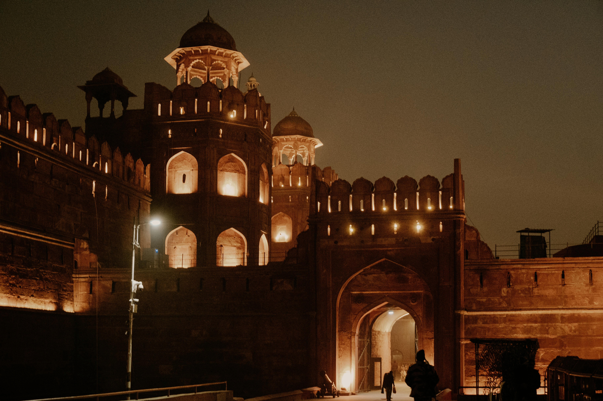
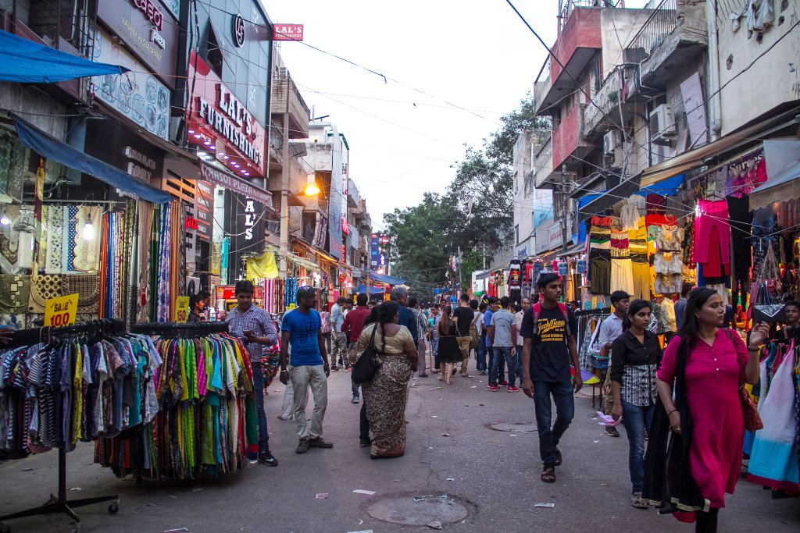
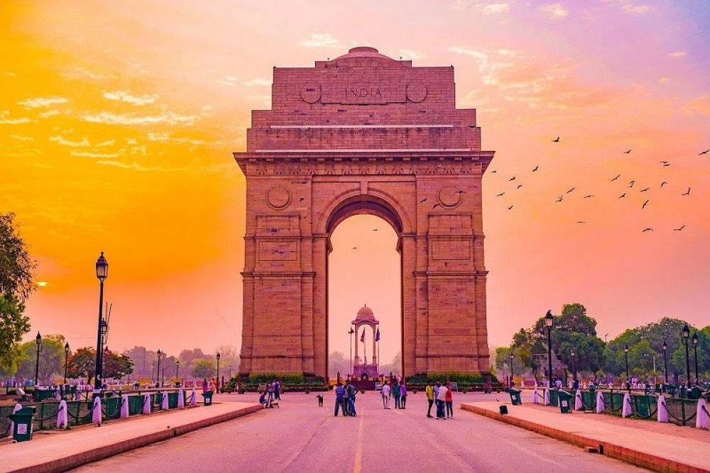
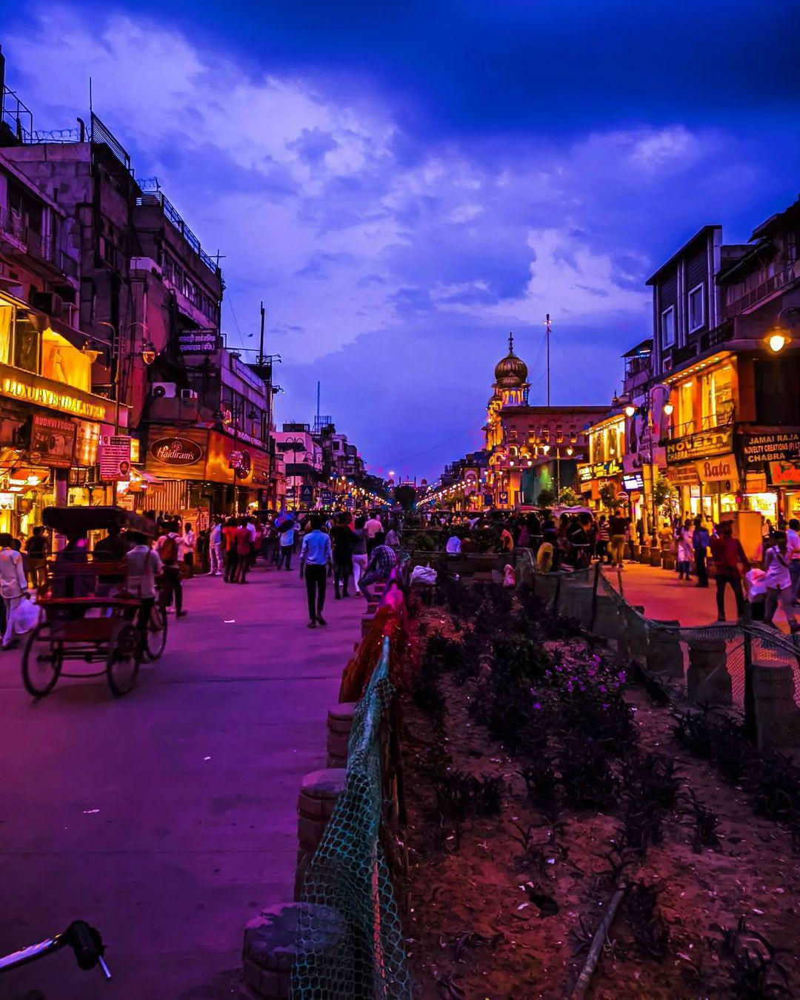
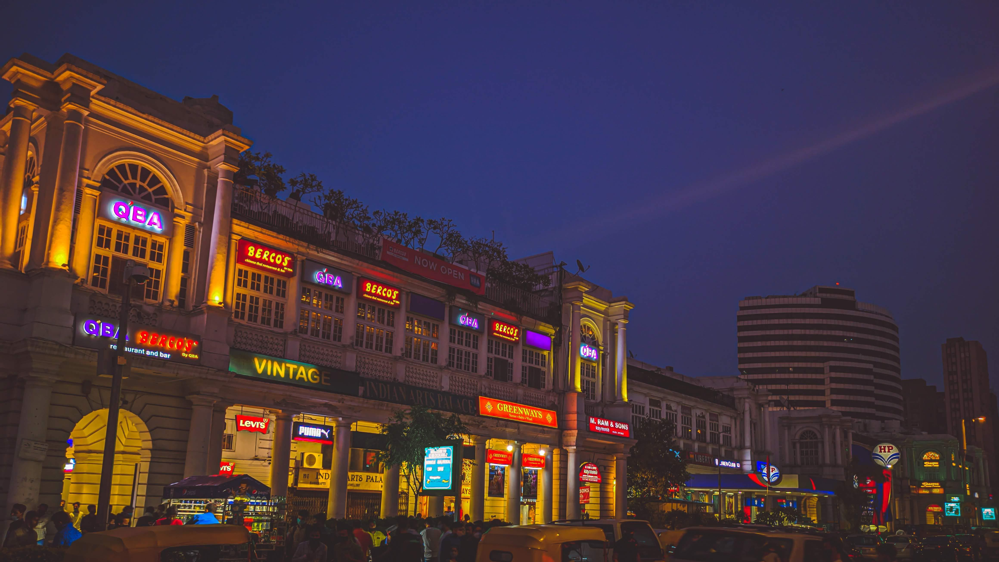

Must Visit Places in Delhi
Red Fort
The Red Fort, also known as Lal Qila, is a historic fortification in Delhi that served as the main residence of the Mughal emperors for nearly 200 years. Built in the mid-17th century by Emperor Shah Jahan, the fort is an architectural masterpiece made of red sandstone and marble. It features intricate carvings, beautiful gardens, and impressive gates. The Red Fort is a UNESCO World Heritage Site and a symbol of India's rich history and culture. It is also the site where the Prime Minister of India hoists the national flag on Independence Day each year.


Sarojini Nagar
Sarojini Nagar Market is a renowned and bustling shopping destination in South Delhi, famous for its incredibly affordable and trendy clothing, accessories, footwear, and home decor items, including export surplus goods. It is a popular spot for bargain hunters and college students, offering a wide variety of fashionable merchandise at bargain prices.
India Gate
India Gate is famous as a prominent war memorial honoring Indian soldiers who died in World War I and other conflicts, and as a popular public gathering space and landmark in New Delhi, featuring a grand arch, beautiful lawns, and the symbolic Amar Jawan Jyoti flame. Designed by Edwin Lutyens, the 42-meter-high structure serves as a symbol of national pride and a popular destination for picnics and family outings.


Chandni Chowk
Chandni Chowk is a historic and busy marketplace in Old Delhi, India, renowned for its narrow lanes, diverse goods, and street food. Built in the 17th century by Mughal Emperor Shah Jahan, it spans from the Red Fort to the Fatehpuri Masjid and is famous for wholesale and retail shopping of items like spices, jewelry, fabrics, and traditional Indian sweets. It's a lively, often chaotic, destination for shoppers and foodies, where visitors can experience the vibrant energy of traditional Indian markets.
Connaught Place
Connaught Place (CP) in New Delhi is famous for its shopping, which includes upscale stores, ethnic markets like Janpath, and the underground Palika Bazaar, its vibrant food and nightlife, featuring various restaurants and bars, its prominent colonial architecture, and as a major commercial and financial center hosting offices and media firms. CP is also a cultural hub and a popular filming location, known for its iconic circular structure and lively atmosphere.
